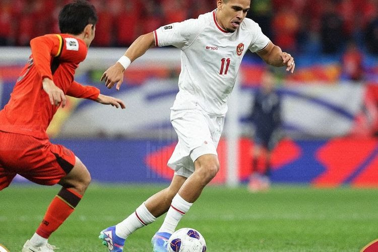
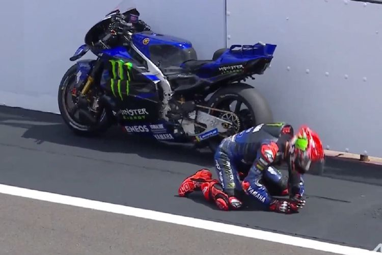
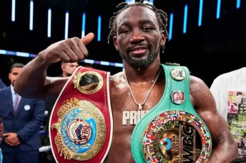

Kabar Buruk bagi China Jadi Berita Baik untuk Timnas Indonesia Jelang Duel di Kualifikasi Piala Dunia 2026

Kabar buruk menerpa China menjelang lawan timnas Indonesia di putaran ketiga Kualifikasi Piala Dunia 2026 Zona Asia. Kabar buruk tersebut, China tidak akan diperkuat oleh penyerang mereka Wu Lei. Timnas China mengonfirmasi pada 26 Mei bahwa Wu Lei kembali ke klub untuk pemulihan karena ketidakmampuannya untuk berpartisipasi dalam latihan jangka panjang dan intensitas tinggi. Saat ini timnas China sedang berlatih di Shanghai. "Pada tanggal 26 Mei, setelah tiga hari menjalani latihan rehabilitasi, tim medis tim nasional menilai bahwa Wu Lei masih belum dapat mengikuti latihan jangka panjang dan berintensitas tinggi," tulis pernyataan timnas China di Weibo, dilansir dari Sohu.
"Staf pelatih memutuskan bahwa Wu Lei akan kembali ke klub Sepak Bola Shanghai Haigang untuk melanjutkan pemulihannya setelah latihan tim pagi ini."
Karena itu Wu Lei kemungkinan akan absen melawan China melawan timnas Indonesia dan Bahrain. China akan melawan timnas Indonesia di Stadion Utama Gelora Bung Karno, Senayan, Jakarta pada 5 Juni 2025
Hasil MotoGP Inggris 2025 - Marc Marquez Terselamatkan Red Flag, Fabio Quartararo Gagal Menang dengan Menyakitkan

Balapan utama MotoGP Inggris 2025 menyuguhkan hasil pahit bagi Fabio Quartararo yang harus merelakan kemenangan dengan sangat menyakitkan. Drama langsung terjadi di putaran pertama sejak balapan utama MotoGP Inggris 2025 dimulai di Sirkuit Silverstone, Inggris, Minggu (25/5/2025). Jatuhnya dua kakak beradik Alex Marquez dan Marc Marquez sebetulnya sempat terselamatkan gara-gara red flag yang membuat balapan diulang. Kesempatan itu dimanfaatkan dengan baik oleh Marc Marquez (Ducati Lenovo) yang masih bisa podium. Sedangkan Fabio Quartararo, start dari pole position, adalah yang paling tersakiti dalam rangkaian balapan hari ini.
El Diablo sempat memimpin balapan dengan dominan, mengasapi para pembalap Ducati dengan unggul sampai 5 detik. Namun semua itu harus berakhir dengan menyakitkan setelah motor Yamaha dia mengalami masalah pada rear height device, hingga Quartararo terpaksa mengakhiri balapan saat menyisakan beberapa putaran terakhir.
Adapun nasib tak kalah merana dialami Francesco Bagnaia, dia merosot jauh ke posisi 12 lalu jatuh kecelakaan dan gagal finis.
Thailand Serius Ajukan Diri Jadi Tuan Rumah F1 Mulai 2028, Geber Balapan Jalan Raya di Bangkok
Pemerintah Thailand menyatakan rencana resmi untuk mengajukan diri sebagai tuan rumah balapan Formula 1 mulai tahun 2028. Pernyataan ini disampaikan pada Senin lalu, menyusul pertemuan terbaru Perdana Menteri Paetongtarn Shinawatra dengan petinggi F1 di ajang Grand Prix Monako, akhir pekan lalu.
Menurut juru bicara pemerintah, Jirayu Houngsub, proposal lengkap yang mencakup studi kelayakan dan dokumen pengajuan akan diajukan ke kabinet Thailand untuk disetujui pada Rabu pekan depan. Diskusi mengenai kemungkinan penyelenggaraan Grand Prix Thailand, yang diperkirakan akan digelar sebagai balapan jalan raya di Bangkok, sudah berlangsung secara intens selama lebih dari setahun.
Pemerintah Thailand mempromosikan konsep balapan yang "berkelanjutan" dan ramah lingkungan, serta menyebut bahwa penyelenggaraan Grand Prix bisa memberikan manfaat ekonomi besar bagi negara. "Balapan ini dapat memberikan dampak ekonomi sebesar 600 juta dolar AS bagi Thailand," ujar Jirayu dalam pernyataannya.
Reaksi Berkelas Patrick Kluivert usai Eliano Reijnders Mundur dari Timnas Indonesia, Singgung Soal Penyesuain Skuad untuk Lawan China dan Jepang
Pelatih Timnas Indonesia, Patrick Kluivert, menanggapi soal pengunduran diri Eliano Reijnders dari pemusatan latihan (TC). Timnas Indonesia kembali kehilangan satu pemain jelang ronde ketiga Kualifikasi Piala Dunia 2026 zona Asia melawan China dan Jepang. Eliano Reijnders yang masuk daftar 32 pemain pilihan Patrick Kluivert untuk laga nanti memutuskan mengundurkan diri dari Timnas Indonesia. Dia ingin berada di sisi keluarga menjelang kelahiran anaknya, yang diperkirakan akan berlangsung di periode pertandingan skuad Garuda.
Timnas Indonesia akan menjamu China di Stadion Utama Gelora Bung Karno (SUGBK), Jakarta pada 5 Juni 2025, pukul 20.45 WIB.
Terence Crawford Kalahkan Canelo Petinju Terbaik Lebihi Sugar Ray

Terence Crawford mengalahkan Saul Canelo Alvarez menjadi pertarungan terbaik yang pernah ada melebihi Sugar Ray Robinson. Terence Crawford mengatakan jika ia naik tiga kelas untuk mengalahkan juara dunia kelas menengah super yang tak terbantahkan, Saul Canelo Alvarez, pada tanggal 13 September. Terence Crawford menyatakan bahwa kemenangan atas Saul Canelo Alvarez, 35 tahun, akan menempatkannya sebagai ‘petinju terhebat yang pernah ada’ di bumi. Terence Crawford (41-0, 31 KO) tidak dianggap hebat karena ia belum pernah mengalahkan seorang petinju elite pun selama 17 tahun karier profesionalnya, dan tampil buruk dalam pertarungan terakhirnya, saat ia kalah angka saat menghadapi Israil Madrimov.
“Tentu saja, mengapa tidak?” ujar Terence Crawford kepada kanal YouTube Ring Champs saat ditanya apakah ia akan menempatkan dirinya sebagai ‘Petarung Terhebat yang pernah ada’ jika ia berhasil mengalahkan Canelo Alvarez pada tanggal 13 September nanti. "Ketika Anda berbicara tentang semua petarung lain, siapa yang akan melakukan atau mencapai sesuatu yang mendekati itu. Jika Crawford mengalahkan Canelo, ia masih belum bisa disebut sebagai ‘petinju terhebat yang pernah ada’ karena resume-nya yang lemah tidak masuk dalam daftar.
Ia akan melawan Canelo yang sudah sangat berpengalaman, yang bukan petinju terbaik di kelas 76,2 kilogram. Fans tidak tahu siapa petarung terbaik di divisi kelas menengah super karena Canelo Alvarez memilih untuk menghindari petarung-petarung terbaik.